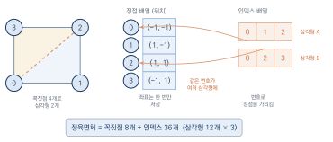
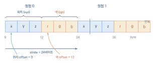
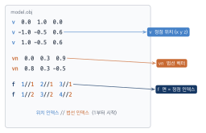
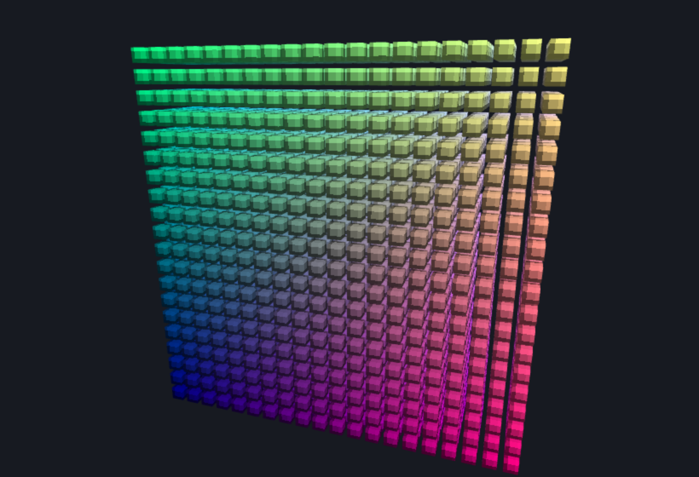
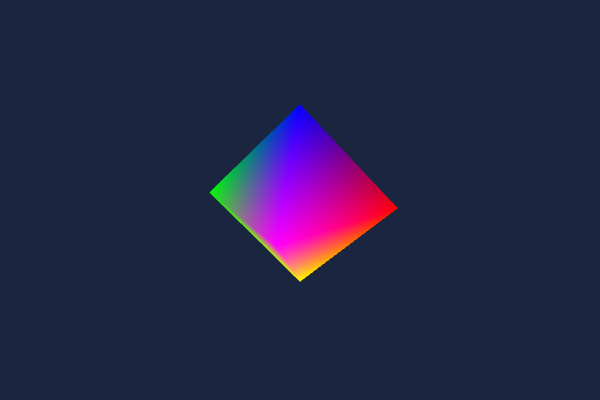

3차원 메시와 모델
이 장을 마치면
- 인덱스 버퍼와
drawElements()로 정점을 공유하며 메시를 효율적으로 그릴 수 있다. - VAO로 물체별 렌더링 설정을 묶어 여러 물체를 전환하며 그릴 수 있다.
- 인터리브 버퍼를 구성하고
stride와offset의 의미를 설명할 수 있다. - OBJ 파일을 파싱하여 3차원 모델을 조명과 함께 화면에 그릴 수 있다.
- 인스턴싱으로 같은 메시 수천 개를 한 번의 드로우 콜로 그릴 수 있다.
- 백페이스·프러스텀 컬링과 공간 분할로 그리지 않을 것을 걸러 낼 수 있다.
지금까지 우리가 그린 물체는 삼각형 몇 개로 충분했다. 그러나 게임 캐릭터 하나, 자동차 한 대는 수만에서 수백만 개의 삼각형으로 이루어진다. 1장에서 약속했듯이 아무리 복잡한 모델도 결국은 삼각형의 모임, 즉 메시이다. 문제는 규모이다. 삼각형이 많아지면 같은 꼭짓점이 수없이 중복되어 메모리를 낭비하고, 물체가 많아지면 물체마다 버퍼 설정을 되풀이하느라 시간을 낭비한다. 그리고 그 많은 정점 좌표를 코드에 손으로 적어 넣을 수는 없는 노릇이다.
이 장은 이 세 가지 문제를 차례로 해결한다. 먼저 인덱스 버퍼로 정점을 공유하여 중복을 없애고, VAO로 물체별 설정을 묶어 여러 물체를 효율적으로 전환하며, 마지막으로 모델링 도구가 만들어 낸 OBJ 파일을 읽어 들이는 파서를 직접 작성해 진짜 3차원 모델을 화면에 띄운다. 이 장을 마치면 "데이터가 주어지면 무엇이든 그릴 수 있는" 뼈대가 완성된다.
9.1 인덱스 버퍼와 drawElements
정점이 중복되는 문제
정육면체를 생각해 보자. 꼭짓점은 여덟 개뿐이다. 그런데 지금까지 배운 방식대로 drawArrays(gl.TRIANGLES, ...)로 정육면체를 그리려면 정점을 몇 개나 준비해야 할까? 정육면체는 여섯 개의 정사각형 면으로 이루어지고, 각 면은 삼각형 두 개로 나뉜다. 삼각형 하나에 정점 세 개가 필요하므로 \(6 \times 2 \times 3 = 36\)개의 정점을 버퍼에 늘어놓아야 한다.
꼭짓점은 여덟 개뿐인데 정점 데이터는 서른여섯 개라니, 무언가 낭비가 있다. 실제로 정육면체의 한 꼭짓점은 세 개의 면이 만나는 자리이므로, 그 좌표가 버퍼 안에 여러 번 되풀이해서 적힌다. TRIANGLES는 정점을 세 개씩 뚝뚝 끊어 삼각형을 만들 뿐, 앞에서 쓴 꼭짓점을 다시 쓸 방법을 모르기 때문이다.
작은 정육면체라면 이 정도 중복은 대수롭지 않다. 그러나 정점이 수천 개인 모델을 떠올려 보자. 표면이 매끄럽게 이어진 메시에서는 꼭짓점 하나를 대여섯 개의 삼각형이 공유하는 것이 보통이다. 중복을 그대로 두면 버퍼 크기가 대여섯 배로 불어난다. 정점 하나가 위치(12바이트)에 색·법선·텍스처 좌표까지 달고 있으면 수십 바이트에 이르므로, 이 낭비는 곧바로 메모리와 대역폭 부담이 된다.
정점을 아껴 쓰려는 노력은 그래픽스의 오랜 숙제였다. 2장에서 만난 TRIANGLE_STRIP과 TRIANGLE_FAN도 정점을 재사용해 삼각형을 잇는 방법이지만, 이어진 띠나 부채꼴이라는 규칙적인 배치에만 쓸 수 있어 임의의 메시에는 맞지 않았다. 임의의 정점 공유를 가능하게 한 것이 이 절에서 배울 인덱스 버퍼이며, 오늘날 거의 모든 3차원 모델이 이 방식으로 저장된다.
인덱스로 정점을 가리키기
해결책은 간단하다. 정점의 좌표는 중복 없이 여덟 개만 두고, 삼각형을 만들 때는 좌표를 늘어놓는 대신 몇 번 정점을 쓸지 그 번호만 나열하는 것이다. 이 번호를 인덱스index라 하고, 인덱스를 담은 버퍼를 인덱스 버퍼index buffer라고 한다. 그림 9.1은 이 발상을 사각형(삼각형 두 개)으로 보인 것이다. 꼭짓점 좌표는 정점 배열에 번호를 붙여 한 번씩만 저장하고, 인덱스 배열은 삼각형마다 쓸 꼭짓점 번호를 나열한다. 두 삼각형이 공유하는 꼭짓점(0번과 2번)은 좌표를 되풀이하지 않고 번호만 다시 적으면 된다.

이 방식을 정육면체에 그대로 적용하면, 좌표는 여덟 꼭짓점만 두고 인덱스 서른여섯 개로 열두 삼각형을 조립한다. 정점 배열과 인덱스 배열로 나누어 표현하면 다음과 같다.
// 정점은 중복 없이 여덟 개 (정육면체의 꼭짓점)
const positions = new Float32Array([
-1, -1, 1, 1, -1, 1, 1, 1, 1, -1, 1, 1, // 앞면 네 꼭짓점
-1, -1, -1, 1, -1, -1, 1, 1, -1, -1, 1, -1, // 뒷면 네 꼭짓점
]);
// 인덱스: 삼각형마다 꼭짓점 번호 세 개 (면 여섯 개 = 삼각형 열두 개)
const indices = new Uint16Array([
0, 1, 2, 0, 2, 3, // 앞면
1, 5, 6, 1, 6, 2, // 오른쪽 면
// ... 나머지 네 면 ...
]);정점 좌표 배열의 값은 여전히 여덟 개 꼭짓점의 좌표 스물넉 개(꼭짓점당 세 값)뿐이다. 삼각형을 어떻게 조립할지는 인덱스 배열이 결정한다. 예컨대 0, 1, 2는 "0번, 1번, 2번 꼭짓점으로 삼각형 하나"라는 뜻이다. 꼭짓점 좌표는 한 번만 저장하고, 그 꼭짓점을 쓰는 삼각형이 여럿이면 번호만 여러 번 적으면 된다.
인덱스는 정수이므로 실수 배열인 Float32Array가 아니라 부호 없는 정수 배열에 담는다. WebGL에서 인덱스로 흔히 쓰는 자료형은 16비트 부호 없는 정수, 즉 Uint16Array이다. 16비트는 \(0\)부터 \(65535\)까지를 표현하므로 정점 65,536개까지의 메시를 가리킬 수 있다. 그보다 큰 메시에는 Uint32Array를 쓴다.
Uint16Array로 표현할 수 있는 정점 번호는 최대 65,535이다. 정점이 이보다 많은 메시를 16비트 인덱스로 그리려 하면 번호가 넘쳐 엉뚱한 정점을 가리킨다. 정점이 6만 개를 넘으면 Uint32Array와 gl.UNSIGNED_INT를 함께 써야 한다.
인덱스 버퍼를 GPU에 올리기
인덱스 버퍼도 정점 버퍼와 같은 방식으로 만들지만, 바인딩 대상이 다르다. 정점 데이터는 gl.ARRAY_BUFFER에 담았지만, 인덱스는 엘리먼트 배열 버퍼element array buffer라는 별도의 바인딩 자리인 gl.ELEMENT_ARRAY_BUFFER에 담는다.
const ibo = gl.createBuffer();
gl.bindBuffer(gl.ELEMENT_ARRAY_BUFFER, ibo); // 인덱스 전용 바인딩 자리
gl.bufferData(gl.ELEMENT_ARRAY_BUFFER, indices, gl.STATIC_DRAW);그리기는 drawArrays() 대신 drawElements()로 한다. 이 명령은 버퍼의 정점을 순서대로 쓰는 대신, 바인딩된 인덱스 버퍼의 번호를 따라가며 정점을 골라 삼각형을 조립한다.
gl.drawElements(mode, count, type, offset);
// mode: 조립 방법 (gl.TRIANGLES 등)
// count: 사용할 인덱스의 개수 (삼각형 수 x 3)
// type: 인덱스의 자료형 (gl.UNSIGNED_SHORT = Uint16Array)
// offset: 인덱스 버퍼에서 시작할 바이트 위치 (보통 0)정육면체라면 삼각형이 열두 개이므로 count는 36, type은 Uint16Array에 대응하는 gl.UNSIGNED_SHORT이다. drawArrays의 count가 "정점의 개수"였던 것과 달리, drawElements의 count는 "인덱스의 개수"임에 주의하자.
정점 좌표는 ARRAY_BUFFER에 중복 없이 담고, 삼각형을 이루는 정점 번호는 ELEMENT_ARRAY_BUFFER에 인덱스로 담는다. drawElements(mode, count, type, offset)은 인덱스를 따라 정점을 골라 조립하므로, 같은 꼭짓점을 여러 삼각형이 공유하여 메모리를 절약한다.
완성 예제 — 인덱스로 그리는 색 정육면체
정점 여덟 개와 인덱스 서른여섯 개로 정육면체를 그려 보자. 6장에서 배운 모델-뷰-투영(MVP) 행렬로 원근감을 주고, 깊이 검사(DEPTH_TEST)를 켜서 뒤쪽 면이 앞쪽 면을 가리지 않도록 한다. 여덟 꼭짓점에 서로 다른 색을 주면, 프래그먼트 셰이더가 그 색을 면 전체에 보간하여 알록달록한 정육면체가 된다.
const canvas = document.getElementById('glCanvas');
const gl = canvas.getContext('webgl2');
const { mat4 } = glMatrix;
const vsSource = `#version 300 es
layout(location = 0) in vec3 aPosition;
layout(location = 1) in vec3 aColor;
uniform mat4 uModel;
uniform mat4 uView;
uniform mat4 uProjection;
out vec3 vColor;
void main() {
gl_Position = uProjection * uView * uModel * vec4(aPosition, 1.0);
vColor = aColor;
}`;
const fsSource = `#version 300 es
precision mediump float;
in vec3 vColor;
out vec4 fragColor;
void main() {
fragColor = vec4(vColor, 1.0);
}`;
// 2장의 셰이더 도우미를 압축한 형태
function makeProgram(gl, vsSource, fsSource) {
function compile(type, src) {
const s = gl.createShader(type);
gl.shaderSource(s, src);
gl.compileShader(s);
if (!gl.getShaderParameter(s, gl.COMPILE_STATUS))
console.log(gl.getShaderInfoLog(s));
return s;
}
const p = gl.createProgram();
gl.attachShader(p, compile(gl.VERTEX_SHADER, vsSource));
gl.attachShader(p, compile(gl.FRAGMENT_SHADER, fsSource));
gl.linkProgram(p);
if (!gl.getProgramParameter(p, gl.LINK_STATUS))
console.log(gl.getProgramInfoLog(p));
return p;
}
const program = makeProgram(gl, vsSource, fsSource);
gl.useProgram(program);
// ----- 정점 데이터: 꼭짓점 8개의 위치와 색 -----
const positions = new Float32Array([
-1, -1, 1, 1, -1, 1, 1, 1, 1, -1, 1, 1, // 앞면 (z = +1)
-1, -1, -1, 1, -1, -1, 1, 1, -1, -1, 1, -1, // 뒷면 (z = -1)
]);
const colors = new Float32Array([
1, 0, 0, 1, 1, 0, 0, 1, 0, 0, 0, 1, // 앞면 네 꼭짓점의 색
1, 0, 1, 0, 1, 1, 1, 0.5, 0, 1, 1, 1, // 뒷면 네 꼭짓점의 색
]);
// ----- 인덱스: 면 6개 x 삼각형 2개 = 인덱스 36개 -----
const indices = new Uint16Array([
0, 1, 2, 0, 2, 3, // 앞면
1, 5, 6, 1, 6, 2, // 오른쪽 면
5, 4, 7, 5, 7, 6, // 뒷면
4, 0, 3, 4, 3, 7, // 왼쪽 면
3, 2, 6, 3, 6, 7, // 윗면
4, 5, 1, 4, 1, 0, // 아랫면
]);
const vao = gl.createVertexArray();
gl.bindVertexArray(vao);
const posVbo = gl.createBuffer(); // 위치 버퍼 → 0번 속성
gl.bindBuffer(gl.ARRAY_BUFFER, posVbo);
gl.bufferData(gl.ARRAY_BUFFER, positions, gl.STATIC_DRAW);
gl.enableVertexAttribArray(0);
gl.vertexAttribPointer(0, 3, gl.FLOAT, false, 0, 0);
const colVbo = gl.createBuffer(); // 색 버퍼 → 1번 속성
gl.bindBuffer(gl.ARRAY_BUFFER, colVbo);
gl.bufferData(gl.ARRAY_BUFFER, colors, gl.STATIC_DRAW);
gl.enableVertexAttribArray(1);
gl.vertexAttribPointer(1, 3, gl.FLOAT, false, 0, 0);
const ibo = gl.createBuffer(); // 인덱스 버퍼
gl.bindBuffer(gl.ELEMENT_ARRAY_BUFFER, ibo);
gl.bufferData(gl.ELEMENT_ARRAY_BUFFER, indices, gl.STATIC_DRAW);
// ----- MVP 행렬 (6장) -----
const model = mat4.create();
const view = mat4.create();
const projection = mat4.create();
mat4.rotateY(model, model, 0.4); // 살짝 돌려 세 면이 보이게
mat4.lookAt(view, [3, 2.5, 4], [0, 0, 0], [0, 1, 0]);
mat4.perspective(projection, Math.PI / 4, 600 / 400, 0.1, 100);
gl.uniformMatrix4fv(gl.getUniformLocation(program, 'uModel'), false, model);
gl.uniformMatrix4fv(gl.getUniformLocation(program, 'uView'), false, view);
gl.uniformMatrix4fv(gl.getUniformLocation(program, 'uProjection'), false,
projection);
// ----- 그리기 -----
gl.enable(gl.DEPTH_TEST); // 깊이 검사 (6장)
gl.clearColor(0.1, 0.15, 0.25, 1.0);
gl.clear(gl.COLOR_BUFFER_BIT | gl.DEPTH_BUFFER_BIT);
gl.drawElements(gl.TRIANGLES, 36, gl.UNSIGNED_SHORT, 0);원근감 있는 정육면체가 나타나고, 꼭짓점마다 다른 색이 면 위에서 부드럽게 섞이는 것을 볼 수 있다. 정점 좌표는 여덟 개뿐인데 열두 개의 삼각형이 그 좌표를 인덱스로 공유해 그려진 결과이다. 마지막 줄에서 drawArrays가 아니라 drawElements를 부른 것, 그리고 count에 정점 수가 아니라 인덱스 수인 36을 넘긴 것을 확인하자.
정점 공유의 한계 — 면마다 다른 속성
인덱스 버퍼는 강력하지만 한 가지 한계가 있다. 한 꼭짓점을 여러 면이 공유하면, 그 꼭짓점은 모든 면에 대해 같은 속성을 가질 수밖에 없다. 위 예제처럼 꼭짓점 색을 면 사이에 부드럽게 섞고 싶을 때는 이 공유가 오히려 이점이다. 그러나 7장에서 배울 법선 벡터처럼 면마다 값이 달라야 하는 속성에서는 문제가 된다.
정육면체의 한 꼭짓점에는 세 면이 만난다. 이 세 면은 서로 수직이므로 법선 방향이 제각각인데, 공유된 꼭짓점 하나에는 법선을 하나밖에 지정할 수 없다. 결국 면이 딱 떨어지는 각진 물체를 제대로 셰이딩하려면, 꼭짓점을 면별로 따로 두어야 한다. 그래서 실무의 정육면체는 꼭짓점을 여덟 개가 아니라 스물넉 개(면 여섯 개 \(\times\) 꼭짓점 네 개)로 둔다. 같은 위치라도 소속된 면의 법선이 다르면 별개의 정점으로 취급하는 것이다.
정리하면 이렇다. 표면이 매끄럽게 이어진 곳에서는 정점을 공유해 메모리를 아끼고, 면이 각지게 꺾이는 모서리에서는 정점을 나누어 면마다 다른 법선을 준다. 실제 모델 데이터는 이 두 전략을 섞어 쓰며, 다음 절과 9.3절에서 그 구체적인 방법을 보게 된다.
정점을 공유하면 그 정점의 속성(색·법선)도 공유된다. 색을 부드럽게 섞을 때는 이점이지만, 정육면체처럼 면이 각진 물체의 법선은 면마다 달라야 하므로 꼭짓점을 면별로 나눈다(정육면체는 8정점이 아니라 24정점). 공유와 분리를 어디에 쓸지가 메시 설계의 핵심이다.
9.2 VAO와 렌더링 효율
앞 절에서 정육면체 하나를 그렸다. 이제 여러 물체를 그릴 차례이다. 물체가 둘 이상이면 물체마다 정점 버퍼도, 속성 연결 설정도 다르다. 그릴 때마다 이 설정을 처음부터 되풀이하면 코드가 지저분해지고 성능도 떨어진다. 이 절에서는 물체별 설정을 통째로 묶어 두는 VAO와, 그리기 명령의 비용을 줄이는 인터리브 버퍼를 다룬다.
VAO — 물체 하나의 설정을 묶는 그릇
2장에서 정점 배열 오브젝트vertex array object, 즉 VAO를 잠깐 소개했다. VAO는 "어떤 버퍼의 데이터를 어떤 속성에 어떻게 공급할지"에 대한 설정 전체를 기록해 두는 그릇이다. VAO를 바인딩한 상태에서 한 enableVertexAttribArray와 vertexAttribPointer 호출, 그리고 어떤 인덱스 버퍼(ELEMENT_ARRAY_BUFFER)를 바인딩했는지가 모두 그 VAO에 저장된다.
정점 셰이더가 삼각형 하나뿐이던 2장에서는 VAO의 이점이 크지 않았다. 그러나 물체가 여럿이 되면 이야기가 달라진다. 물체마다 VAO를 하나씩 만들어 설정을 넣어 두면, 그릴 때는 그 VAO 하나만 바인딩하는 것으로 모든 설정이 한꺼번에 복원된다. 물체를 바꿔 그릴 때마다 버퍼를 다시 바인딩하고 속성을 다시 지정할 필요가 없어진다.
// 초기화 단계: 물체마다 VAO를 하나씩 만들어 설정을 채워 둔다
const vaoA = gl.createVertexArray();
gl.bindVertexArray(vaoA);
// ... 물체 A의 버퍼 바인딩, 속성 설정, 인덱스 버퍼 바인딩 ...
gl.bindVertexArray(null); // 설정 끝 (다른 VAO를 건드리지 않게 해제)
// 그리기 단계: VAO 하나만 바인딩하면 설정이 통째로 복원된다
gl.bindVertexArray(vaoA);
gl.drawElements(gl.TRIANGLES, 36, gl.UNSIGNED_SHORT, 0);VAO를 물체 단위로 관리하면 "이 물체를 그려라"가 곧 "이 VAO를 바인딩하고 그려라"가 되어, 렌더링 코드가 물체 수와 무관하게 단순해진다.
드로우 콜은 비싸다
물체 하나를 그리는 drawArrays나 drawElements 한 번의 호출을 드로우 콜draw call이라고 한다. 드로우 콜은 CPU가 GPU에게 "이 설정으로 이만큼 그려라"라고 지시하는 명령이며, 이 지시를 준비하고 전달하는 데에 적지 않은 비용이 든다. 그래서 삼각형 수가 같더라도 드로우 콜이 많을수록 느려진다. 렌더링 성능 최적화의 상당 부분이 "드로우 콜 수를 줄이는" 일에 관한 것이다.
그리기의 비용을 줄이려는 노력은 그래픽스 API의 역사 그 자체이다. 초창기 OpenGL은 정점 하나하나를 glVertex(...) 같은 함수 호출로 넘기는 즉시 모드(immediate mode)를 썼다. 정점이 수십만 개면 함수 호출도 수십만 번이라 CPU가 병목이 되었다. 이를 개선하려고 그리기 명령을 미리 컴파일해 저장해 두는 디스플레이 리스트(display list)가 등장했고, 이어 정점을 배열로 묶어 한 번에 넘기는 정점 배열과 이를 GPU 메모리에 상주시키는 정점 버퍼 객체(VBO)로 발전했다. WebGL을 포함한 현대 API는 즉시 모드와 디스플레이 리스트를 아예 없애고, 데이터는 버퍼(VBO)로 GPU에 올려 두고 설정은 VAO로 묶으며 그리기는 드로우 콜로 지시하는 방식만 남겼다. 우리가 이 책에서 처음부터 VBO와 VAO로 그려 온 것이 바로 그 도착점이다.
인터리브 버퍼 — 한 버퍼에 여러 속성
앞 절의 정육면체는 위치를 담은 버퍼와 색을 담은 버퍼, 두 개를 따로 두었다. 속성마다 버퍼를 하나씩 두는 이 방식을 여러 배열이 각자 떨어져 있다는 뜻에서 분리 배열이라 부른다. 이해하기는 쉽지만, GPU가 한 정점을 처리할 때 위치는 이 버퍼에서, 색은 저 버퍼에서 따로 읽어 와야 한다.
대안은 한 정점에 필요한 모든 속성을 하나의 버퍼에 나란히 붙여 두는 것이다. 위치 세 값, 색 세 값을 번갈아 배치하면 한 정점의 데이터가 버퍼 안에서 이어진 한 덩어리가 된다. 여러 속성을 한 버퍼에 섞어 넣은 이 구조를 인터리브 버퍼interleaved buffer라고 한다.
// [x, y, z, r, g, b] 를 정점마다 반복 — 위치와 색이 한 버퍼에 섞여 있다
const data = new Float32Array([
-1, -1, 1, 1.0, 0.3, 0.2, // 0번 정점: 위치 + 색
1, -1, 1, 1.0, 0.6, 0.2, // 1번 정점
// ...
]);인터리브 버퍼는 한 정점의 모든 속성이 메모리에 붙어 있어 GPU가 읽기에 유리하고, 버퍼 객체를 하나만 관리하면 되어 코드도 단순해진다. 실무의 메시 데이터는 대개 이 방식으로 저장된다. 다만 한 버퍼에 여러 속성이 섞여 있으니, GPU에게 "이 버퍼에서 위치는 어디부터 몇 개, 색은 어디부터 몇 개를 읽어라"라고 알려 주어야 한다. 그 역할을 하는 것이 vertexAttribPointer의 stride와 offset 인자이다.
stride와 offset
지금까지 우리는 vertexAttribPointer를 부르며 마지막 두 인자를 늘 0, 0으로 넘겼다. 이제 그 둘의 정체를 밝힐 때이다. 함수의 전체 원형은 다음과 같다.
gl.vertexAttribPointer(index, size, type, normalized, stride, offset);
// index: 속성 번호 (layout(location = n))
// size: 이 속성을 이루는 값의 개수 (위치는 3, 색도 3)
// type: 값의 자료형 (gl.FLOAT)
// normalized: 정수를 0~1로 정규화할지 (실수 데이터는 false)
// stride: 한 정점의 전체 바이트 크기 (다음 정점까지의 간격)
// offset: 이 버퍼에서 이 속성이 시작하는 바이트 위치스트라이드stride는 한 정점의 데이터가 차지하는 전체 바이트 크기, 즉 다음 정점의 같은 속성까지 몇 바이트를 건너뛰어야 하는가이다. 오프셋offset은 버퍼의 시작으로부터 이 속성이 처음 나타나는 바이트 위치이다.
인터리브 버퍼에 위치 세 개와 색 세 개, 모두 float 여섯 개가 한 정점을 이룬다고 하자. float는 4바이트이므로 한 정점은 \(6 \times 4 = 24\)바이트이고, 이것이 스트라이드이다. 위치는 정점의 맨 앞에서 시작하므로 오프셋은 0, 색은 위치 세 개(12바이트) 뒤에서 시작하므로 오프셋은 12이다. 그림 9.2은 이 버퍼의 메모리 배치를 나타낸 것이다. 한 정점의 위치와 색이 나란히 붙어 있고, 다음 정점까지의 간격이 스트라이드, 각 속성이 시작하는 자리가 오프셋이다.

const STRIDE = 6 * 4; // 한 정점 = float 6개 = 24바이트
gl.enableVertexAttribArray(0); // 0번 = 위치
gl.vertexAttribPointer(0, 3, gl.FLOAT, false, STRIDE, 0); // 오프셋 0
gl.enableVertexAttribArray(1); // 1번 = 색
gl.vertexAttribPointer(1, 3, gl.FLOAT, false, STRIDE, 12); // 오프셋 12그동안 stride에 0을 넘겼던 것은 특별한 약속 때문이다. stride가 0이면 WebGL은 "속성이 빈틈없이 이어져 있다"고 보고 size와 type으로부터 간격을 스스로 계산한다. 속성마다 버퍼가 따로일 때는 이 편의가 통했지만, 인터리브 버퍼에서는 간격을 명시적으로 알려 주어야 한다.
vertexAttribPointer의 stride는 한 정점의 전체 바이트 크기(다음 정점까지의 간격), offset은 버퍼에서 그 속성이 시작하는 바이트 위치이다. 여러 속성을 한 버퍼에 섞은 인터리브 버퍼는 이 둘로 각 속성의 자리를 지정한다. 속성마다 버퍼가 따로면 stride는 0으로 두어도 된다.
완성 예제 — VAO로 정육면체 두 개 그리기
인터리브 버퍼로 정육면체를 만들고, VAO를 두 개 두어 색이 다른 정육면체 두 개를 서로 다른 위치에 그려 보자. 카메라(뷰·투영)와 인덱스 버퍼는 두 물체가 공유하고, 물체마다 다른 것은 VAO(색이 담긴 인터리브 버퍼)와 uModel 행렬뿐이다. 그리기 단계에서 VAO를 전환하고 uModel만 바꾸며 drawElements를 두 번 부른다.
const canvas = document.getElementById('glCanvas');
const gl = canvas.getContext('webgl2');
const { mat4 } = glMatrix;
const vsSource = `#version 300 es
layout(location = 0) in vec3 aPosition;
layout(location = 1) in vec3 aColor;
uniform mat4 uModel;
uniform mat4 uView;
uniform mat4 uProjection;
out vec3 vColor;
void main() {
gl_Position = uProjection * uView * uModel * vec4(aPosition, 1.0);
vColor = aColor;
}`;
const fsSource = `#version 300 es
precision mediump float;
in vec3 vColor;
out vec4 fragColor;
void main() {
fragColor = vec4(vColor, 1.0);
}`;
// 2장의 셰이더 도우미를 압축한 형태
function makeProgram(gl, vsSource, fsSource) {
function compile(type, src) {
const s = gl.createShader(type);
gl.shaderSource(s, src);
gl.compileShader(s);
if (!gl.getShaderParameter(s, gl.COMPILE_STATUS))
console.log(gl.getShaderInfoLog(s));
return s;
}
const p = gl.createProgram();
gl.attachShader(p, compile(gl.VERTEX_SHADER, vsSource));
gl.attachShader(p, compile(gl.FRAGMENT_SHADER, fsSource));
gl.linkProgram(p);
if (!gl.getProgramParameter(p, gl.LINK_STATUS))
console.log(gl.getProgramInfoLog(p));
return p;
}
const program = makeProgram(gl, vsSource, fsSource);
gl.useProgram(program);
// ----- 인덱스 버퍼: 두 정육면체가 공유한다 -----
const indices = new Uint16Array([
0, 1, 2, 0, 2, 3, 1, 5, 6, 1, 6, 2,
5, 4, 7, 5, 7, 6, 4, 0, 3, 4, 3, 7,
3, 2, 6, 3, 6, 7, 4, 5, 1, 4, 1, 0,
]);
const ibo = gl.createBuffer();
gl.bindBuffer(gl.ELEMENT_ARRAY_BUFFER, ibo);
gl.bufferData(gl.ELEMENT_ARRAY_BUFFER, indices, gl.STATIC_DRAW);
// ----- 물체 하나 = VAO 하나: 인터리브 버퍼를 만들어 VAO로 묶는다 -----
function makeCubeVao(gl, ibo, colors) {
const pos = [
-1, -1, 1, 1, -1, 1, 1, 1, 1, -1, 1, 1,
-1, -1, -1, 1, -1, -1, 1, 1, -1, -1, 1, -1,
];
// [x y z r g b] 순서로 한 버퍼에 섞어 담는다 (인터리브)
const data = new Float32Array(8 * 6);
for (let i = 0; i < 8; i++) {
data.set(pos.slice(i * 3, i * 3 + 3), i * 6); // 위치 3개
data.set(colors.slice(i * 3, i * 3 + 3), i * 6 + 3); // 색 3개
}
const vao = gl.createVertexArray();
gl.bindVertexArray(vao);
const vbo = gl.createBuffer();
gl.bindBuffer(gl.ARRAY_BUFFER, vbo);
gl.bufferData(gl.ARRAY_BUFFER, data, gl.STATIC_DRAW);
// 한 정점 = 24바이트: 위치는 오프셋 0, 색은 오프셋 12
gl.enableVertexAttribArray(0);
gl.vertexAttribPointer(0, 3, gl.FLOAT, false, 24, 0);
gl.enableVertexAttribArray(1);
gl.vertexAttribPointer(1, 3, gl.FLOAT, false, 24, 12);
gl.bindBuffer(gl.ELEMENT_ARRAY_BUFFER, ibo); // 인덱스 버퍼도 VAO에 기록
gl.bindVertexArray(null); // 설정 끝
return vao;
}
// 따뜻한 색 조합과 차가운 색 조합으로 VAO 두 개를 만든다
const warm = [
1.0, 0.3, 0.2, 1.0, 0.6, 0.2, 1.0, 0.9, 0.3, 1.0, 0.4, 0.5,
0.8, 0.2, 0.2, 0.9, 0.5, 0.1, 1.0, 0.8, 0.5, 0.9, 0.3, 0.4,
];
const cool = [
0.2, 0.4, 1.0, 0.2, 0.8, 1.0, 0.3, 1.0, 0.9, 0.4, 0.5, 1.0,
0.2, 0.2, 0.8, 0.1, 0.6, 0.9, 0.5, 0.9, 1.0, 0.3, 0.4, 0.9,
];
const vaoA = makeCubeVao(gl, ibo, warm);
const vaoB = makeCubeVao(gl, ibo, cool);
// ----- 카메라는 두 물체가 공유한다 -----
const view = mat4.create();
const projection = mat4.create();
mat4.lookAt(view, [0, 2.5, 7], [0, 0, 0], [0, 1, 0]);
mat4.perspective(projection, Math.PI / 4, 600 / 400, 0.1, 100);
const uModelLoc = gl.getUniformLocation(program, 'uModel');
gl.uniformMatrix4fv(gl.getUniformLocation(program, 'uView'), false, view);
gl.uniformMatrix4fv(gl.getUniformLocation(program, 'uProjection'), false,
projection);
gl.enable(gl.DEPTH_TEST);
gl.clearColor(0.1, 0.15, 0.25, 1.0);
gl.clear(gl.COLOR_BUFFER_BIT | gl.DEPTH_BUFFER_BIT);
// ----- 그리기: VAO 전환 + uModel 교체로 drawElements 2회 -----
const model = mat4.create();
mat4.fromTranslation(model, [-1.7, 0, 0]); // 왼쪽 정육면체
mat4.rotateY(model, model, 0.5);
gl.uniformMatrix4fv(uModelLoc, false, model);
gl.bindVertexArray(vaoA);
gl.drawElements(gl.TRIANGLES, 36, gl.UNSIGNED_SHORT, 0);
mat4.fromTranslation(model, [1.7, 0, 0]); // 오른쪽 정육면체
mat4.rotateY(model, model, -0.3);
gl.uniformMatrix4fv(uModelLoc, false, model);
gl.bindVertexArray(vaoB);
gl.drawElements(gl.TRIANGLES, 36, gl.UNSIGNED_SHORT, 0);따뜻한 색과 차가운 색의 정육면체가 나란히 나타난다. 그리기 코드는 놀랄 만큼 짧다. 물체를 바꿀 때 한 일은 bindVertexArray로 VAO를 전환하고 uModel을 새 위치로 바꾼 것뿐이다. 버퍼 바인딩과 속성 설정은 초기화 때 VAO에 기록해 두었으므로 그리기 단계에서는 손댈 필요가 없다. 물체가 100개로 늘어도 이 패턴은 그대로다. VAO 배열을 순회하며 uModel만 갈아 끼우고 drawElements를 부르면 된다. 물체별 설정을 묶는 VAO가 없었다면 물체마다 대여섯 줄의 버퍼 설정을 되풀이해야 했을 것이다.
물체마다 VAO를 하나씩 두고 초기화 때 버퍼와 속성 설정을 채워 두면, 그리기 단계에서는 VAO를 바인딩하고 uModel만 바꿔 드로우 콜을 부르면 된다. 카메라(뷰·투영)와 인덱스 버퍼처럼 공통인 것은 공유하고, 물체마다 다른 것만 VAO와 유니폼으로 교체한다.
9.3 OBJ 파일과 모델 로딩
지금까지 정점 좌표를 코드에 손으로 적어 넣었다. 정육면체 정도라면 견딜 만하지만, 정점이 수천 개인 모델을 이렇게 적을 수는 없다. 실제 3차원 모델은 블렌더 같은 모델링 도구로 만들어 파일로 저장하고, 프로그램이 그 파일을 읽어 들여 그린다. 이 절에서는 가장 널리 쓰이는 모델 파일 형식인 OBJ를 읽어 화면에 그리는 파서를 직접 만든다.
OBJ 파일 형식
OBJWavefront OBJ는 텍스트 기반의 단순한 모델 형식으로, 한 줄에 하나의 정보를 담는다. 줄의 첫 글자(키워드)가 그 줄의 종류를 정하며, 우리에게 필요한 것은 세 가지이다.
| 라인 | 의미 |
|---|---|
v x y z | 정점의 위치 좌표 하나 |
vn x y z | 법선 벡터 하나 |
f v//vn v//vn v//vn | 면 하나 (정점의 위치·법선 인덱스) |
v 줄은 위치 좌표를, vn 줄은 법선 벡터를 파일에 나온 순서대로 나열한다. f(face) 줄은 면 하나를 이루는 정점들을 가리키는데, 좌표를 직접 쓰지 않고 앞서 나열한 v와 vn의 인덱스로 지목한다. 이는 9.1절의 인덱스 버퍼와 똑같은 발상이다. 정점 하나의 표기 v//vn은 "위치 인덱스//법선 인덱스"라는 뜻이며, 가운데 자리는 텍스처 좌표를 위한 것인데 여기서는 비워 둔다. 작은 예를 보자.
v 0.0 1.0 0.0
v -1.0 -0.5 0.6
v 1.0 -0.5 0.6
v 0.0 -0.5 -1.0
vn 0.0 0.3 0.9
vn 0.8 0.3 -0.5
vn -0.8 0.3 -0.5
vn 0.0 -1.0 0.0
f 1//1 2//1 3//1
f 1//2 3//2 4//2
f 1//3 4//3 2//3
f 2//4 4//4 3//4정점 네 개와 법선 네 개, 면 네 개로 이루어진 정사면체이다. 첫 번째 f 줄 1//1 2//1 3//1은 "1번, 2번, 3번 위치를 꼭짓점으로 하고, 세 꼭짓점 모두 1번 법선을 쓰는 삼각형"이라는 뜻이다. 그림 9.3은 이 세 종류의 줄이 어떻게 맞물리는지를 정리한 것이다. v와 vn 줄은 위치와 법선을 순서대로 나열하고, f 줄은 그 값들을 인덱스로 지목해 면을 만든다.

OBJ의 인덱스는 0이 아니라 1부터 시작한다. 파일의 f 1//1은 배열의 0번 원소를 가리킨다. 자바스크립트 배열은 0부터 시작하므로, 파싱할 때 인덱스에서 반드시 1을 빼 주어야 한다. 이 오프바이원(off-by-one) 실수는 모델이 통째로 어긋나거나 화면이 비는 흔한 버그의 원인이다.
OBJ 파서 만들기
파서의 뼈대는 옛 강의에서 쓰던 메시 로더의 논리를 자바스크립트로 옮긴 것이다. 파일 전체를 줄 단위로 훑으면서, v와 vn 줄은 각각 배열에 모으고, f 줄을 만나면 인덱스가 가리키는 위치와 법선을 꺼내 최종 정점 배열로 풀어쓴다(unpack). 풀어쓴다는 것은, 인덱스로 그리는 대신 삼각형마다 필요한 위치와 법선을 실제 값으로 나열해 drawArrays로 그릴 수 있게 만든다는 뜻이다. 이렇게 하면 같은 위치라도 면마다 다른 법선을 줄 수 있어(9.1절의 한계 참고), 각진 물체의 셰이딩이 자연스러워진다.
// OBJ 텍스트를 받아 위치·법선을 풀어쓴 정점 배열로 반환한다
function parseOBJ(text) {
const v = [], vn = []; // 파일에 나온 순서대로 모은다
const positions = [], normals = []; // 최종 정점 배열 (풀어쓴 형태)
for (const line of text.split('\n')) {
const t = line.trim().split(/\s+/); // 공백으로 토큰 분리
if (t[0] === 'v') v.push(t.slice(1).map(Number));
else if (t[0] === 'vn') vn.push(t.slice(1).map(Number));
else if (t[0] === 'f') {
const corners = t.slice(1).map(s => {
const [pi, , ni] = s.split('/'); // "위치//법선" 분해
return [Number(pi) - 1, Number(ni) - 1]; // 1부터 → 0부터
});
// 부채꼴 분할: 정점 4개 이상인 면도 삼각형으로 나눈다
for (let i = 1; i < corners.length - 1; i++) {
for (const [pi, ni] of [corners[0], corners[i],
corners[i + 1]]) {
positions.push(...v[pi]);
normals.push(...vn[ni]);
}
}
}
}
return {
positions: new Float32Array(positions),
normals: new Float32Array(normals),
count: positions.length / 3, // 정점 개수
};
}핵심을 짚어 보자. split(/ s+/)는 한 줄을 공백 기준으로 토큰으로 쪼갠다. 첫 토큰이 키워드(v, vn, f)이고 나머지가 값이다. f 줄의 각 꼭짓점 "1//1"은 다시 split('/')로 쪼개 위치 인덱스와 법선 인덱스를 얻고, 여기서 1을 빼 0부터 시작하는 배열 인덱스로 바꾼다. 안쪽 이중 반복문은 면을 삼각형으로 나누는 부채꼴 분할이다. 정점이 세 개면 삼각형 하나, 네 개면 두 개가 되는 이 처리는 OBJ의 사각형 면(f에 꼭짓점 네 개)까지 자동으로 다루게 해 준다.
파일을 읽는 방법
실제 프로그램에서는 OBJ 파일을 웹 서버에서 fetch로 가져와 그 텍스트를 파서에 넘긴다.
// 실제 파일을 읽는 패턴 (비동기)
const response = await fetch('model.obj');
const text = await response.text();
const mesh = parseOBJ(text); // 위에서 만든 파서에 넘긴다fetch는 파일을 웹 서버에서 비동기로 받아 오므로, 실행에 별도의 파일과 서버가 필요하다. 이 책의 실행 창은 파일을 갖추기 어려우므로, 아래 완성 예제에서는 작은 OBJ를 템플릿 문자열로 코드 안에 내장하여 parseOBJ에 곧바로 넘긴다. 파서 자체는 문자열이 파일에서 왔든 코드에서 왔든 똑같이 동작하므로, 이 예제의 파서를 그대로 두고 문자열만 fetch로 읽어 온 텍스트로 바꾸면 실제 파일을 그리는 프로그램이 된다.
완성 예제 — OBJ를 파싱하여 조명과 함께 그리기
작은 집 모양 OBJ를 문자열로 내장하고, 파싱한 메시를 7장에서 배울 램버트 조명으로 렌더링해 보자. 램버트 모델에서 한 면의 밝기는 그 면의 법선과 광원 방향의 내적(4장)으로 정해진다. 정면을 향한 면은 밝고, 비스듬한 면은 어둡다. 여기에 약한 주변광을 더해 그늘진 면도 완전히 검게 보이지 않도록 한다.
const canvas = document.getElementById('glCanvas');
const gl = canvas.getContext('webgl2');
const { mat4 } = glMatrix;
// ----- 작은 집 모양 OBJ (파일 대신 문자열로 내장) -----
const objText = `
v -1.0 0.0 1.0
v 1.0 0.0 1.0
v 1.0 1.2 1.0
v -1.0 1.2 1.0
v -1.0 0.0 -1.0
v 1.0 0.0 -1.0
v 1.0 1.2 -1.0
v -1.0 1.2 -1.0
v 0.0 1.9 1.0
v 0.0 1.9 -1.0
vn 0.0 0.0 1.0
vn 0.0 0.0 -1.0
vn 1.0 0.0 0.0
vn -1.0 0.0 0.0
vn -0.573 0.819 0.0
vn 0.573 0.819 0.0
f 1//1 2//1 3//1 4//1
f 4//1 3//1 9//1
f 6//2 5//2 8//2 7//2
f 7//2 8//2 10//2
f 2//3 6//3 7//3 3//3
f 5//4 1//4 4//4 8//4
f 4//5 9//5 10//5 8//5
f 9//6 3//6 7//6 10//6
`;
// ----- OBJ 파서: v, vn, f 라인을 읽어 정점 배열로 풀어낸다 -----
function parseOBJ(text) {
const v = [], vn = []; // 파일에 나온 순서대로 모은다
const positions = [], normals = []; // 최종 정점 배열 (풀어쓴 형태)
for (const line of text.split('\n')) {
const t = line.trim().split(/\s+/); // 공백으로 토큰 분리
if (t[0] === 'v') v.push(t.slice(1).map(Number));
else if (t[0] === 'vn') vn.push(t.slice(1).map(Number));
else if (t[0] === 'f') {
const corners = t.slice(1).map(s => {
const [pi, , ni] = s.split('/'); // "위치//법선" 분해
return [Number(pi) - 1, Number(ni) - 1]; // 1부터 → 0부터
});
// 부채꼴 분할: 정점 4개 이상인 면도 삼각형으로 나눈다
for (let i = 1; i < corners.length - 1; i++) {
for (const [pi, ni] of [corners[0], corners[i],
corners[i + 1]]) {
positions.push(...v[pi]);
normals.push(...vn[ni]);
}
}
}
}
return {
positions: new Float32Array(positions),
normals: new Float32Array(normals),
count: positions.length / 3, // 정점 개수
};
}
const vsSource = `#version 300 es
layout(location = 0) in vec3 aPosition;
layout(location = 1) in vec3 aNormal;
uniform mat4 uModel;
uniform mat4 uView;
uniform mat4 uProjection;
out vec3 vNormal;
void main() {
gl_Position = uProjection * uView * uModel * vec4(aPosition, 1.0);
vNormal = mat3(uModel) * aNormal; // 법선을 월드 공간으로 (7장)
}`;
const fsSource = `#version 300 es
precision mediump float;
in vec3 vNormal;
uniform vec3 uLightDir; // 표면에서 광원을 향하는 방향
out vec4 fragColor;
void main() {
vec3 n = normalize(vNormal);
float diff = max(dot(n, normalize(uLightDir)), 0.0); // 램버트 (7장)
vec3 base = vec3(0.9, 0.65, 0.35); // 물체의 기본색
fragColor = vec4(base * (0.25 + 0.75 * diff), 1.0); // 주변광 + 확산광
}`;
// 2장의 셰이더 도우미를 압축한 형태
function makeProgram(gl, vsSource, fsSource) {
function compile(type, src) {
const s = gl.createShader(type);
gl.shaderSource(s, src);
gl.compileShader(s);
if (!gl.getShaderParameter(s, gl.COMPILE_STATUS))
console.log(gl.getShaderInfoLog(s));
return s;
}
const p = gl.createProgram();
gl.attachShader(p, compile(gl.VERTEX_SHADER, vsSource));
gl.attachShader(p, compile(gl.FRAGMENT_SHADER, fsSource));
gl.linkProgram(p);
if (!gl.getProgramParameter(p, gl.LINK_STATUS))
console.log(gl.getProgramInfoLog(p));
return p;
}
const program = makeProgram(gl, vsSource, fsSource);
gl.useProgram(program);
// ----- 파싱한 메시를 버퍼에 올린다 -----
const mesh = parseOBJ(objText);
console.log('vertex count:', mesh.count); // 42 (삼각형 14개)
const vao = gl.createVertexArray();
gl.bindVertexArray(vao);
const posVbo = gl.createBuffer();
gl.bindBuffer(gl.ARRAY_BUFFER, posVbo);
gl.bufferData(gl.ARRAY_BUFFER, mesh.positions, gl.STATIC_DRAW);
gl.enableVertexAttribArray(0);
gl.vertexAttribPointer(0, 3, gl.FLOAT, false, 0, 0);
const nrmVbo = gl.createBuffer();
gl.bindBuffer(gl.ARRAY_BUFFER, nrmVbo);
gl.bufferData(gl.ARRAY_BUFFER, mesh.normals, gl.STATIC_DRAW);
gl.enableVertexAttribArray(1);
gl.vertexAttribPointer(1, 3, gl.FLOAT, false, 0, 0);
// ----- 행렬과 조명 -----
const model = mat4.create();
const view = mat4.create();
const projection = mat4.create();
mat4.fromTranslation(model, [0, -0.9, 0]); // 집의 중심을 원점 근처로
mat4.rotateY(model, model, -0.35);
mat4.lookAt(view, [3, 2.2, 5], [0, 0, 0], [0, 1, 0]);
mat4.perspective(projection, Math.PI / 4, 600 / 400, 0.1, 100);
gl.uniformMatrix4fv(gl.getUniformLocation(program, 'uModel'), false, model);
gl.uniformMatrix4fv(gl.getUniformLocation(program, 'uView'), false, view);
gl.uniformMatrix4fv(gl.getUniformLocation(program, 'uProjection'), false,
projection);
gl.uniform3f(gl.getUniformLocation(program, 'uLightDir'), 0.5, 1.0, 0.8);
// ----- 그리기 -----
gl.enable(gl.DEPTH_TEST);
gl.clearColor(0.1, 0.15, 0.25, 1.0);
gl.clear(gl.COLOR_BUFFER_BIT | gl.DEPTH_BUFFER_BIT);
gl.drawArrays(gl.TRIANGLES, 0, mesh.count);음영이 진 입체적인 집이 나타난다. 벽과 지붕의 면마다 밝기가 다른 것은, 파서가 각 면의 법선을 정점에 실어 두고 프래그먼트 셰이더가 그 법선과 광원 방향의 내적으로 밝기를 계산했기 때문이다. 콘솔에 찍힌 정점 개수 42는 삼각형 열네 개(집의 여덟 면 중 사각형 여섯 개가 삼각형 둘씩, 삼각형 두 개가 하나씩)에서 나온 값이다. objText 문자열을 다른 OBJ 파일의 내용으로 바꾸면, 코드 한 줄 고치지 않고 다른 모델이 그려진다. 바로 이것이 파일에서 모델을 읽는 로더를 만든 목적이다.
OBJ 파일은 v(위치)·vn(법선)·f(면 인덱스) 라인으로 메시를 담으며, 인덱스는 1부터 시작한다. 파서는 v·vn을 순서대로 모으고 f가 가리키는 값을 풀어써서 정점 배열을 만든다. 이렇게 하면 면마다 다른 법선을 실을 수 있어 조명이 자연스럽고, 문자열만 파일 내용으로 바꾸면 어떤 모델이든 읽을 수 있다.
9.4 인스턴싱
같은 메시를 수백, 수천 개 그려야 할 때가 있다. 풀밭의 풀잎, 우주의 소행성, 군중의 사람들. 이들을 물체마다 drawElements를 한 번씩 호출해 그리면, 정점 데이터는 하나인데도 드로우 콜draw call이 수천 번 발생한다. 드로우 콜 하나하나에는 CPU — GPU 통신 비용이 붙으므로, 이것이 곧 병목이 된다. 인스턴싱instancing은 같은 메시를 한 번의 드로우 콜로 여러 번 그리는 기법이다.
인스턴스별 속성과 디바이저
핵심 아이디어는 이렇다. 정점 데이터(위치·법선)는 모든 인스턴스가 공유하되, 인스턴스마다 다른 값(위치 오프셋, 색, 변환 행렬)은 인스턴스별 속성으로 따로 넘긴다. 보통의 정점 속성은 정점마다 다음 값으로 넘어가지만, 인스턴스별 속성은 정점 속성 디바이저vertex attribute divisor를 1로 두어 인스턴스마다 한 번씩만 넘어가게 한다.
// 인스턴스별 오프셋 버퍼 (인스턴스 하나당 vec3 하나)
const offsetBuf = gl.createBuffer();
gl.bindBuffer(gl.ARRAY_BUFFER, offsetBuf);
gl.bufferData(gl.ARRAY_BUFFER, offsets, gl.STATIC_DRAW);
gl.enableVertexAttribArray(2);
gl.vertexAttribPointer(2, 3, gl.FLOAT, false, 0, 0);
gl.vertexAttribDivisor(2, 1); // 핵심: 인스턴스마다 한 번씩 전진정점 셰이더에서는 이 인스턴스 속성을 보통 속성처럼 받아 위치에 더한다. 내장 변수 gl_InstanceID로 몇 번째 인스턴스인지도 알 수 있다.
layout(location=0) in vec3 aPos;
layout(location=2) in vec3 aOffset; // 인스턴스별
uniform mat4 uVP;
void main(){ gl_Position = uVP * vec4(aPos + aOffset, 1.0); }그리기는 drawArraysInstanced(또는 drawElementsInstanced) 한 번이면 끝이다. 마지막 인자가 인스턴스 개수다.
gl.drawArraysInstanced(gl.TRIANGLES, 0, vertexCount, instanceCount);예제 — 큐브 수천 개
아래 예제는 작은 큐브 \(20\times20\times5 = 2000\)개를 단 한 번의 드로우 콜로 격자에 배치한다. 인스턴스마다 위치 오프셋과 색을 넘겨, 같은 큐브가 저마다 다른 자리에서 다른 색으로 나타난다.
const { mat4 } = glMatrix;
const gl = glCanvas.getContext('webgl2', { antialias: true });
// 큐브 정점 (36개)
const P = [-1,-1,-1, 1,-1,-1, 1,1,-1, -1,-1,-1, 1,1,-1, -1,1,-1,
-1,-1,1, 1,-1,1, 1,1,1, -1,-1,1, 1,1,1, -1,1,1,
-1,1,-1, -1,1,1, 1,1,1, -1,1,-1, 1,1,1, 1,1,-1,
-1,-1,-1, 1,-1,1, -1,-1,1, -1,-1,-1, 1,-1,-1, 1,-1,1,
1,-1,-1, 1,1,1, 1,-1,1, 1,-1,-1, 1,1,-1, 1,1,1,
-1,-1,-1, -1,-1,1, -1,1,1, -1,-1,-1, -1,1,1, -1,1,-1];
const vs = `#version 300 es
layout(location=0) in vec3 aPos;
layout(location=1) in vec3 aOffset;
layout(location=2) in vec3 aColor;
uniform mat4 uVP; out vec3 vColor; out vec3 vP;
void main(){ vColor=aColor; vP=aPos; gl_Position=uVP*vec4(aPos*0.35+aOffset,1.0); }`;
const fs = `#version 300 es
precision highp float; in vec3 vColor; in vec3 vP; out vec4 o;
void main(){
vec3 n = normalize(round(vP)); // 면 법선 근사
float d = max(dot(n, normalize(vec3(0.4,0.8,0.5))), 0.0);
o = vec4(vColor*(0.35+0.75*d), 1.0);
}`;
function sh(t,s){ const o=gl.createShader(t); gl.shaderSource(o,s); gl.compileShader(o); return o; }
const pr=gl.createProgram();
gl.attachShader(pr, sh(gl.VERTEX_SHADER, vs));
gl.attachShader(pr, sh(gl.FRAGMENT_SHADER, fs));
gl.linkProgram(pr); gl.useProgram(pr);
const vao=gl.createVertexArray(); gl.bindVertexArray(vao);
let b=gl.createBuffer(); gl.bindBuffer(gl.ARRAY_BUFFER,b);
gl.bufferData(gl.ARRAY_BUFFER, new Float32Array(P), gl.STATIC_DRAW);
gl.enableVertexAttribArray(0); gl.vertexAttribPointer(0,3,gl.FLOAT,false,0,0);
// 인스턴스별 오프셋·색 만들기
const NX=20, NY=20, NZ=5, N=NX*NY*NZ;
const off=new Float32Array(N*3), col=new Float32Array(N*3);
let i=0;
for(let z=0;z<NZ;z++) for(let y=0;y<NY;y++) for(let x=0;x<NX;x++){
off[i*3]=(x-NX/2)*1.0; off[i*3+1]=(y-NY/2)*1.0; off[i*3+2]=-z*1.0;
col[i*3]=x/NX; col[i*3+1]=y/NY; col[i*3+2]=0.5+z/NZ*0.5; i++;
}
b=gl.createBuffer(); gl.bindBuffer(gl.ARRAY_BUFFER,b);
gl.bufferData(gl.ARRAY_BUFFER, off, gl.STATIC_DRAW);
gl.enableVertexAttribArray(1); gl.vertexAttribPointer(1,3,gl.FLOAT,false,0,0);
gl.vertexAttribDivisor(1, 1); // 인스턴스별
b=gl.createBuffer(); gl.bindBuffer(gl.ARRAY_BUFFER,b);
gl.bufferData(gl.ARRAY_BUFFER, col, gl.STATIC_DRAW);
gl.enableVertexAttribArray(2); gl.vertexAttribPointer(2,3,gl.FLOAT,false,0,0);
gl.vertexAttribDivisor(2, 1); // 인스턴스별
const vp=mat4.create(), proj=mat4.create(), view=mat4.create();
mat4.perspective(proj, 50*Math.PI/180, glCanvas.width/glCanvas.height, 0.1, 100);
mat4.lookAt(view, [8, 8, 22], [0,0,-2], [0,1,0]);
mat4.multiply(vp, proj, view);
gl.uniformMatrix4fv(gl.getUniformLocation(pr,'uVP'), false, vp);
gl.enable(gl.DEPTH_TEST);
gl.clearColor(0.09,0.10,0.13,1); gl.clear(gl.COLOR_BUFFER_BIT|gl.DEPTH_BUFFER_BIT);
gl.drawArraysInstanced(gl.TRIANGLES, 0, 36, N); // 드로우 콜 단 한 번!실행하면 그림 9.4처럼 큐브 2000개가 격자로 나타나되, 자바스크립트가 GPU에 보낸 그리기 명령은 단 한 줄이다. 개수를 20000개로 늘려도 드로우 콜은 여전히 하나다.

인스턴싱은 "같은 것을 많이"의 정답이다. 공유 데이터(정점)와 개별 데이터(오프셋·색·행렬)를 분리하고, 개별 데이터에 디바이저 1을 주어 한 번의 드로우 콜로 전부 그린다. 인스턴스별로 전체 변환 행렬(mat4)을 넘기면 위치·회전·크기가 다른 물체도 한꺼번에 그릴 수 있다.
9.5 컬링과 공간 분할
가장 빠른 삼각형은 그리지 않는 삼각형이다. 어차피 보이지 않을 것을 일찌감치 걸러 내면, GPU는 남은 것에만 힘을 쏟는다. 이렇게 보이지 않는 것을 골라 버리는 일을 통틀어 컬링culling이라 한다.
백페이스 컬링
닫힌 물체(구·상자처럼 속이 보이지 않는 물체)는 뒤를 향한 면이 늘 앞면에 가려진다. 그런 뒷면은 굳이 래스터화할 필요가 없다. 백페이스 컬링back-face culling은 정점의 감기 방향(winding)으로 앞뒤를 판별해 뒷면을 버린다. 한 줄로 켠다.
gl.enable(gl.CULL_FACE); // 기본은 뒷면(CCW가 앞면)을 버림닫힌 물체가 많은 장면에서 이것만으로도 프래그먼트 작업이 대략 절반으로 준다. (단, 평면·잎사귀처럼 양면이 다 보여야 하는 물체는 꺼야 한다.)
프러스텀 컬링
카메라의 시야는 절두체frustum(6장)라는 사각뿔대다. 이 밖에 있는 물체는 화면에 아예 나오지 않으므로 그리기 전에 버릴 수 있다. 각 물체를 감싸는 경계 구bounding sphere나 경계 상자bounding box를 절두체의 여섯 평면과 비교해, 완전히 바깥이면 드로우 콜 자체를 생략한다. 인스턴싱과 달리 이것은 CPU에서 하는 판단이다.
공간 분할 — 검사할 대상을 줄이기
물체가 수만 개면 매 프레임 전부를 절두체와 비교하는 것도 비싸다. 그래서 공간을 미리 칸으로 나눠 두고, 카메라가 걸치는 칸의 물체만 검사한다. 대표적인 공간 분할spatial partitioning 구조는 다음과 같다.
- 균일 격자uniform grid: 공간을 같은 크기 칸으로 나눈다. 단순하고 빠르지만 밀도가 고르지 않으면 비효율적이다.
- 쿼드트리/옥트리quadtree/octree: 물체가 많은 영역만 재귀적으로 더 잘게 나눈다.
- BVHbounding volume hierarchy: 경계 부피를 트리로 계층화한다. 레이 트레이싱(11장)의 가속 구조로도 쓰인다.
성능의 큰 그림은 "일을 줄이는 순서"다 — 공간 분할로 검사할 물체를 줄이고, 프러스텀 컬링으로 그릴 물체를 줄이고, 백페이스 컬링으로 래스터화할 면을 줄이고, 남은 것은 인스턴싱으로 드로우 콜을 줄인다. 네 단계가 위에서 아래로 걸러 내며 GPU의 부담을 덜어 준다.
실습 9-1 정팔면체(octahedron)를 인덱스 버퍼로 그려 보자. 정팔면체는 위·아래·앞·뒤·좌·우 여섯 꼭짓점을 삼각형 여덟 개로 잇는 물체이다. 꼭짓점 여섯 개의 위치와 색, 그리고 삼각형 여덟 개(인덱스 24개)를 작성하여 9.1절 정육면체 예제의 데이터 부분만 교체한다.
해답 꼭짓점을 여섯 축 끝에 두고, 위 꼭짓점(2번)과 아래 꼭짓점(3번)을 중심으로 옆면 네 개씩을 잇는다.
const canvas = document.getElementById('glCanvas');
const gl = canvas.getContext('webgl2');
const { mat4 } = glMatrix;
const vsSource = `#version 300 es
layout(location = 0) in vec3 aPosition;
layout(location = 1) in vec3 aColor;
uniform mat4 uModel;
uniform mat4 uView;
uniform mat4 uProjection;
out vec3 vColor;
void main() {
gl_Position = uProjection * uView * uModel * vec4(aPosition, 1.0);
vColor = aColor;
}`;
const fsSource = `#version 300 es
precision mediump float;
in vec3 vColor;
out vec4 fragColor;
void main() {
fragColor = vec4(vColor, 1.0);
}`;
function makeProgram(gl, vsSource, fsSource) {
function compile(type, src) {
const s = gl.createShader(type);
gl.shaderSource(s, src);
gl.compileShader(s);
if (!gl.getShaderParameter(s, gl.COMPILE_STATUS))
console.log(gl.getShaderInfoLog(s));
return s;
}
const p = gl.createProgram();
gl.attachShader(p, compile(gl.VERTEX_SHADER, vsSource));
gl.attachShader(p, compile(gl.FRAGMENT_SHADER, fsSource));
gl.linkProgram(p);
if (!gl.getProgramParameter(p, gl.LINK_STATUS))
console.log(gl.getProgramInfoLog(p));
return p;
}
const program = makeProgram(gl, vsSource, fsSource);
gl.useProgram(program);
// ----- 정점 6개: +x, -x, +y, -y, +z, -z 여섯 축 끝 -----
const positions = new Float32Array([
1, 0, 0, -1, 0, 0, 0, 1, 0,
0, -1, 0, 0, 0, 1, 0, 0, -1,
]);
const colors = new Float32Array([
1, 0, 0, 0, 1, 0, 0, 0, 1,
1, 1, 0, 1, 0, 1, 0, 1, 1,
]);
// ----- 인덱스: 위 꼭짓점(2)·아래 꼭짓점(3) 둘레로 삼각형 8개 -----
const indices = new Uint16Array([
0, 2, 4, 1, 4, 2, 0, 4, 3, 1, 3, 4, // 앞쪽 위·아래
0, 5, 2, 1, 2, 5, 0, 3, 5, 1, 5, 3, // 뒤쪽 위·아래
]);
const vao = gl.createVertexArray();
gl.bindVertexArray(vao);
const posVbo = gl.createBuffer(); // 위치 버퍼 → 0번 속성
gl.bindBuffer(gl.ARRAY_BUFFER, posVbo);
gl.bufferData(gl.ARRAY_BUFFER, positions, gl.STATIC_DRAW);
gl.enableVertexAttribArray(0);
gl.vertexAttribPointer(0, 3, gl.FLOAT, false, 0, 0);
const colVbo = gl.createBuffer(); // 색 버퍼 → 1번 속성
gl.bindBuffer(gl.ARRAY_BUFFER, colVbo);
gl.bufferData(gl.ARRAY_BUFFER, colors, gl.STATIC_DRAW);
gl.enableVertexAttribArray(1);
gl.vertexAttribPointer(1, 3, gl.FLOAT, false, 0, 0);
const ibo = gl.createBuffer(); // 인덱스 버퍼
gl.bindBuffer(gl.ELEMENT_ARRAY_BUFFER, ibo);
gl.bufferData(gl.ELEMENT_ARRAY_BUFFER, indices, gl.STATIC_DRAW);
// ----- MVP 행렬 -----
const model = mat4.create();
const view = mat4.create();
const projection = mat4.create();
mat4.rotateY(model, model, 0.5);
mat4.lookAt(view, [3, 2, 3.5], [0, 0, 0], [0, 1, 0]);
mat4.perspective(projection, Math.PI / 4, 600 / 400, 0.1, 100);
gl.uniformMatrix4fv(gl.getUniformLocation(program, 'uModel'), false, model);
gl.uniformMatrix4fv(gl.getUniformLocation(program, 'uView'), false, view);
gl.uniformMatrix4fv(gl.getUniformLocation(program, 'uProjection'), false,
projection);
// ----- 그리기 -----
gl.enable(gl.DEPTH_TEST); // 깊이 검사
gl.clearColor(0.1, 0.15, 0.25, 1.0);
gl.clear(gl.COLOR_BUFFER_BIT | gl.DEPTH_BUFFER_BIT);
gl.drawElements(gl.TRIANGLES, 24, gl.UNSIGNED_SHORT, 0); // 인덱스 24개
삼각형이 여덟 개이므로 drawElements의 count는 \(8 \times 3 = 24\)이다. 꼭짓점은 여섯 개뿐인데 여덟 삼각형이 그 꼭짓점을 공유한다. 실행하면 그림 9.5과 같이 옆에서 보면 마름모꼴로 보이는 정팔면체가 나타난다.
실습 9-2 어떤 메시가 한 정점마다 위치 3개, 법선 3개, 텍스처 좌표 2개(모두 float)를 인터리브 버퍼에 담는다고 하자. (a) 한 정점의 스트라이드는 몇 바이트인가? (b) 위치·법선·텍스처 좌표 세 속성의 오프셋은 각각 얼마인가? (c) 이 셋을 0·1·2번 속성에 연결하는 vertexAttribPointer 호출을 작성하시오.
해답 float는 4바이트이고 한 정점은 \(3 + 3 + 2 = 8\)개의 float로 이루어진다.
- (a) 스트라이드 \(= 8 \times 4 = 32\)바이트.
- (b) 위치는 맨 앞이므로 오프셋 0. 법선은 위치 3개(12바이트) 뒤이므로 오프셋 12. 텍스처 좌표는 위치와 법선 6개(24바이트) 뒤이므로 오프셋 24.
const STRIDE = 8 * 4; // 32바이트
gl.vertexAttribPointer(0, 3, gl.FLOAT, false, STRIDE, 0); // 위치
gl.vertexAttribPointer(1, 3, gl.FLOAT, false, STRIDE, 12); // 법선
gl.vertexAttribPointer(2, 2, gl.FLOAT, false, STRIDE, 24); // 텍스처 좌표세 속성 모두 스트라이드는 같고(한 정점의 전체 크기), 오프셋만 각자의 시작 위치로 다르다는 점이 핵심이다.
실습 9-3 9.3절의 집 OBJ에는 바닥 면이 없어 아래에서 보면 속이 뚫려 있다. 바닥을 향하는 법선을 하나 추가하고, 바닥 사각형 면을 f 줄로 추가해 보자. (힌트: 바닥의 네 꼭짓점은 1, 2, 6, 5번이고, 바닥 법선은 아래를 향하는 \((0, -1, 0)\)이다. 바깥에서 볼 때 반시계 방향이 되도록 정점 순서에 유의한다.)
해답 vn 목록 끝에 아래 방향 법선(7번)을 더하고, f 목록 끝에 바닥 면을 추가한다.
// vn 목록에 추가 (일곱 번째 법선)
// vn 0.0 -1.0 0.0
// f 목록에 추가 (바닥: 아래에서 볼 때 반시계 방향)
// f 1//7 5//7 6//7 2//7파서의 부채꼴 분할이 이 사각형 면을 삼각형 두 개로 나눈다. 카메라를 물체 아래쪽으로 옮겨(예: lookAt의 눈 위치 \(y\)를 음수로) 실행하면, 이전에는 뚫려 있던 바닥이 이제 램버트 조명으로 채워져 보인다. 면을 추가하는 것이 좌표 배열을 손대는 일이 아니라 f 줄 한 줄을 더하는 일임을 확인하자. 이것이 인덱스 기반 형식의 편리함이다.
9장에서 만난 API
정점을 재사용하는 인덱스 그리기, 같은 메시를 한 번에 여러 개 그리는 인스턴싱, 그리고 보이지 않는 면을 버리는 컬링 API를 정리한다. 화살표(\(\hookrightarrow\))가 반환값이며, 이 장의 그리기·상태 함수는 모두 값을 돌려주지 않는다.
gl.bindBuffer(gl.ELEMENT_ARRAY_BUFFER, ebo)정점 인덱스를 담는 버퍼를 바인딩한다.↪ 반환: 없음(void)gl.drawElements(mode, count, type, offset)인덱스 버퍼를 따라 정점을 재사용하며 그린다. 공유 정점을 중복 저장하지 않아 효율적이다. type은 보통 gl.UNSIGNED_SHORT.↪ 반환: 없음(void)gl.vertexAttribDivisor(index, divisor)divisor가 1이면 그 정점 속성이 정점마다가 아니라 인스턴스마다 한 번씩 넘어간다(인스턴스별 위치·색 등).↪ 반환: 없음(void)gl.drawArraysInstanced(mode, first, count, n)같은 도형을 n개의 인스턴스로 한 번의 드로우 콜에 그린다. 인덱스 버전은 gl.drawElementsInstanced.↪ 반환: 없음(void)gl.enable(gl.CULL_FACE)카메라를 등진 뒷면을 그리기 전에 버려 작업량을 줄인다. 앞·뒷면 판정은 정점의 감김 순서로 정한다.↪ 반환: 없음(void)9장 요약
TRIANGLES로 정육면체를 그리면 꼭짓점이 여덟 개인데도 정점 데이터가 36개 필요하다. 같은 꼭짓점이 여러 삼각형에 되풀이되어 중복되기 때문이다.- 인덱스 버퍼는 정점 좌표를 중복 없이 두고, 삼각형을 이루는 정점 번호(인덱스)만 나열한다. 인덱스는
Uint16Array(최대 65,535)에 담아ELEMENT_ARRAY_BUFFER에 올린다. drawElements(mode, count, type, offset)은 인덱스를 따라 정점을 골라 조립한다.count는 인덱스의 개수(삼각형 수 \(\times\) 3)이고,type은gl.UNSIGNED_SHORT(=Uint16Array)이다.- 정점을 공유하면 그 정점의 속성도 공유된다. 색을 부드럽게 섞을 때는 이점이지만, 면마다 법선이 달라야 하는 각진 물체는 꼭짓점을 면별로 나눈다(정육면체는 24정점).
- VAO는 버퍼 바인딩과 속성 설정, 인덱스 버퍼 바인딩을 통째로 기록하는 그릇이다. 물체마다 VAO를 두면 그리기 단계에서 VAO를 바인딩하고
uModel만 바꿔 드로우 콜을 부르면 된다. - 물체 하나를 그리는 드로우 콜은 비용이 있어, 삼각형 수가 같아도 드로우 콜이 많을수록 느리다. 즉시 모드 → 디스플레이 리스트 → 정점 배열 → VBO/VAO로 이어진 역사가 이 비용을 줄여 온 과정이다.
- 인터리브 버퍼는 한 정점의 여러 속성(위치·색·법선)을 한 버퍼에 나란히 담는다.
vertexAttribPointer의 스트라이드(한 정점의 전체 바이트 크기)와 오프셋(속성이 시작하는 바이트 위치)으로 각 속성의 자리를 지정한다. 속성마다 버퍼가 따로면 스트라이드는 0으로 두어도 된다. - OBJ 파일은
v(위치)·vn(법선)·f(면 인덱스) 라인으로 메시를 담으며, 인덱스는 1부터 시작한다(파싱 시 1을 빼야 한다). 파서는v·vn을 모으고f가 가리키는 값을 풀어써서, 면마다 다른 법선을 실은 정점 배열을 만든다. - 실제 프로그램은 OBJ를
fetch로 읽어 파서에 넘긴다. 파서를 그대로 두고 입력 문자열만 바꾸면 어떤 모델이든 그릴 수 있다.
9장 연습문제
- ★
TRIANGLES로 정육면체를 그릴 때 인덱스 버퍼 없이 정점을 늘어놓으면 정점이 몇 개 필요한가? 인덱스 버퍼를 쓰면 정점 좌표는 몇 개로 줄어드는가? (색·법선 없이 위치만 공유한다고 가정) - ★ 어떤 삼각형 메시가 정점 2,000개와 삼각형 3,600개로 이루어진다. 위치만 담을 때(정점당
float3개,float는 4바이트) 다음을 계산하시오.- 인덱스 버퍼를 쓸 때 정점 버퍼의 바이트 크기.
Uint16Array인덱스 버퍼의 바이트 크기(인덱스 하나는 2바이트).- 인덱스 없이 삼각형마다 정점을 늘어놓으면 정점 버퍼가 몇 바이트가 되는가? (a)+(b)와 비교하시오.
- ★ 삼각형 열두 개로 이루어진 메시를
drawElements로 그린다. 다음 호출의 빈칸count에 들어갈 값은 무엇인가? 인덱스가Uint16Array에 담겨 있다면type에는 무엇을 넘겨야 하는가?gl.drawElements(gl.TRIANGLES, /* count? */, /* type? */, 0); - ★★ 한 정점이 위치 3개와 색 4개(RGBA), 모두
float7개로 이루어진 인터리브 버퍼가 있다. (a) 스트라이드는 몇 바이트인가? (b) 위치와 색의 오프셋은 각각 얼마인가? (c) 두 속성을 0·1번에 연결하는vertexAttribPointer두 줄을 쓰시오. - ★★ 다음 OBJ 조각을 자바스크립트 배열로 옮기려 한다.
이v 0 0 0 v 1 0 0 v 0 1 0 f 1 2 3f줄이 가리키는 세 정점의 0부터 시작하는 배열 인덱스는 각각 무엇인가? 파서에서 이 변환을 위해 각 인덱스에 어떤 연산을 해야 하는가? - ★★ 9.1절에서 "정육면체의 법선을 제대로 주려면 8정점이 아니라 24정점이 필요하다"고 했다. 그 이유를 정육면체 한 꼭짓점에 모이는 면의 수와 각 면의 법선 방향을 들어 설명하시오. 반대로, 정점을 공유해도 문제가 없는 속성의 예를 하나 들으시오.
- ★★ 9.3절의
parseOBJ는f줄의 꼭짓점이 네 개 이상일 때 부채꼴 분할로 삼각형을 만든다. 꼭짓점이a b c d e(다섯 개)인 면 하나는 삼각형 몇 개로 나뉘며, 각 삼각형은 어떤 꼭짓점 세 개로 이루어지는가? 코드의 반복문을 근거로 답하시오. - ★★★ 9.2절의 정육면체 두 개 예제를 확장하여, 정육면체 다섯 개를 \(x\)축을 따라 일렬로 그리려 한다. VAO와 인덱스 버퍼는 하나만 공유하고 위치만 다르게 하고 싶다. 어떤 부분을 배열이나 반복문으로 바꾸면 되는지 그리기 단계의 의사코드로 나타내시오. 드로우 콜은 모두 몇 번 일어나는가?